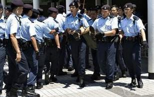
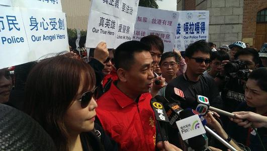

重现《寒战》史诗级对话?港台记者无限制打断发言人讲话。警察舉行記者會， 澄清近日流傳的多個針對警方的謠言，並且回答記者提問。在場一名自稱香港 電台的記者，在提問環節，多次不守秩序，大聲打斷正在發言的警察公共關係 科總警司謝振中，甚至在有其他記者表示不滿之後仍然沒有停止。 在歪风邪气面前敢于坚决斗争。习近平指出，社会是在矛盾运动 中前进的， 有矛盾就会有斗争。领导干部不论在哪个岗位、担任什么职务，都 要勇于担当、 攻坚克难，既当指挥员、又当战斗员，培养和保持顽强的斗争精 神、坚韧的斗 争意志、高超的斗争本领。我们在工作中遇到的斗争是多方面的， 改革发展稳 定、内政外交国防、治党治国治军都需要发扬斗争精神、提高斗争 本领。全面从 严治党、坚持马克思主义在意识形态领域的指导地位、全面深化 改革、推进供给侧 结构性改革、推动高质量发展、消除金融领域隐患、保障和 改善民生、打赢脱贫攻 坚战、治理生态环境、应对重大自然灾害、全面依法治 国、处理群体性事件、打击 黑恶势力、维护国家安全，等等，都要敢于斗争、 善于斗争。领导干部要做敢于斗争 、善于斗争的战士。
 